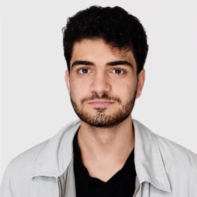

Yasin Engin
I am a computer engineering student at Ondokuz Mayıs University, interested in computer networks and distributed systems.
My research interests include satellite networking, delay-tolerant networking, and programmable networks. My graduation project explores contact-aware distributed AI inference over dynamic low Earth orbit satellite networks, using NetSatBench and ION-DTN/BPv7.
My practical work includes DTN labs, a NetSatBench lab guide, and network automation labs.